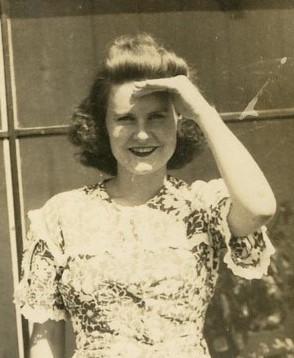
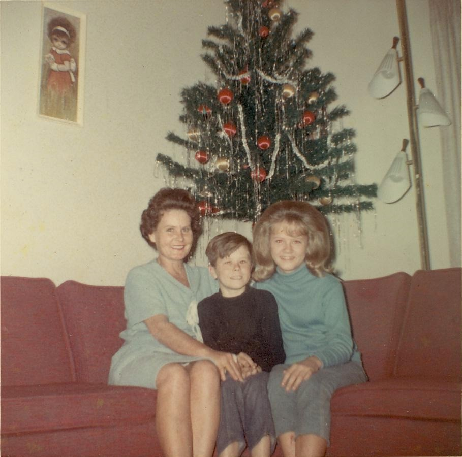
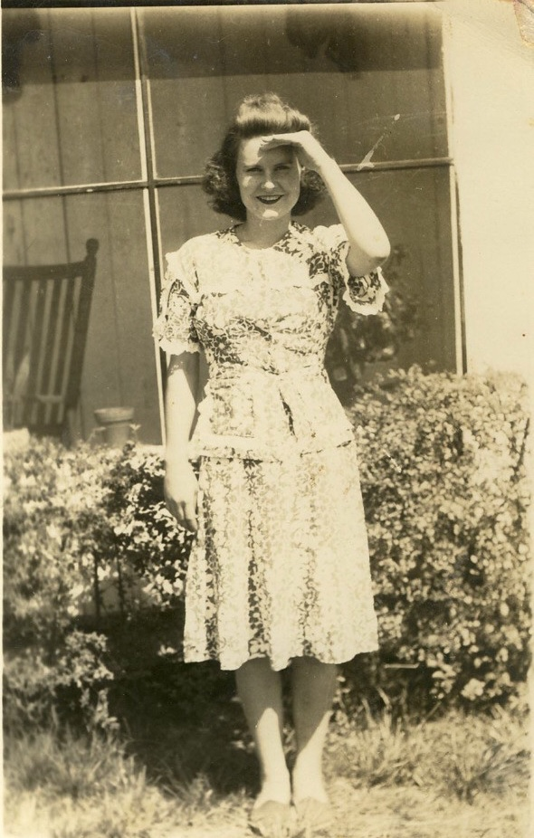
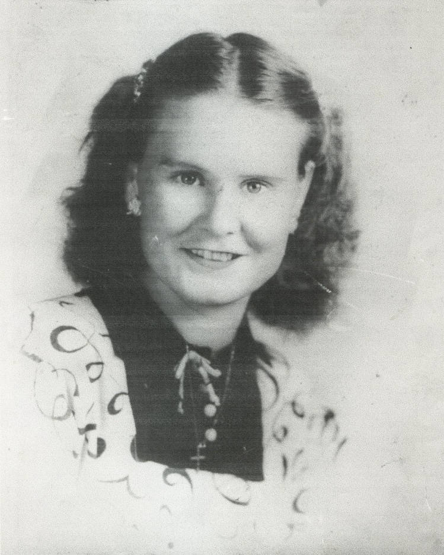

Mary Lou Herrin
1927–1972

Life Events
Born: May 8, 1927 — Pearson, Atkinson, Georgia, United States
Died: December 16, 1972 — Orlando, Orange, Florida, United States
Family
Father: William Levi "W.L." Herrin Sr.
Mother: Laura Etta Palmer
Siblings
- Ollie Mae Herrin
- James Talmadge Herrin Sr.
- Ida Mae "Shorty" Herrin
- Gladys Lucille Herrin
- Dorothy Herrin
- William Levi "Billy" Herrin Jr.
- Evelyn Herrin
- Shelby Jean Herrin
- Deloris Herrin
Children
Military Service
No military service information has been added.
Biography
Mary Lou Herrin was born May 8, 1927, in Pearson, Atkinson County, Georgia, the daughter of William Levi Herrin (1892–1975) and Laura Etta Palmer (1898–1959). She grew up as part of the large Herrin family, whose roots extended through southern Georgia and northern Florida.
On August 3, 1947, at age 20, Mary Lou married Gordon Edward Bell in Brooks County, Georgia. Their marriage was performed by Frank H. McElroy, a minister. An unusual family connection occurred that same day when Mary Lou's sister Gladys Lucille Herrin married Lamar Lee Stephens, also in Brooks County, with the same minister officiating. The sisters' marriage records appear together on the same page of the county marriage register. Although it is not known whether they participated in a joint wedding ceremony, the two sisters shared the same wedding date and minister.
In 1952, Mary Lou married Charles Alton Miller Sr. (1929–2015) in Taylor County, Florida. The Florida Department of Health marriage record identifies her as Mary Lou Bell, reflecting her surname from her previous marriage. Their marriage was recorded under certificate number 15947, volume 1387.
Mary Lou and Charles had two children, Robbie and Linda Miller. A family photograph shows Mary Lou seated with her children in front of a Christmas tree, preserving a glimpse of their family life. Linda is believed to be the Linda T. Miller identified as the informant on Mary Lou's death certificate, although that connection has not yet been independently verified.
Mary Lou and Charles Miller divorced in June 1967 in Taylor County, Florida. Their divorce is documented in Florida records under certificate number 13840. Charles later died January 18, 2015, in Florida, at age 85.
Following her divorce, Mary Lou married Howard Mathis. Howard was the brother of Freddy Ray Mathis, who married Mary Lou's sister Evelyn Herrin. As a result, two Herrin sisters married two Mathis brothers, creating an additional family connection between the Herrin and Mathis families. The exact date and location of Mary Lou's marriage to Howard have not yet been established.
Mary Lou spent part of her life in Taylor County, Florida, where several members of the Herrin family had settled. Her death certificate identifies her occupation as homemaker and records Howard Mathis as her surviving husband.
Mary Lou died December 16, 1972, in Orlando, Orange County, Florida, at the age of 45. Her death certificate identifies Miss Linda T. Miller as the informant. She was buried December 19, 1972, at Woodlawn Cemetery in Perry, Taylor County, Florida, where several members of the Herrin family are also buried.
Photos



Sources
-
1930 United States Census — William Levi Herrin Household
Type: Census1930 United States Census recording the household of William L. Herrin in Pearson, Atkinson County, Georgia. William was recorded as a farmer on a general farm, and the family owned its home.
Location: Pearson, Atkinson, Georgia, United States
Household: William L. Herrin Household
Household Members:
- William L. Herrin, head, age 38
- Laura Herrin, wife, age 32
- Ollie Herrin, daughter, age 12
- James Herrin, son, age 10
- Ida Mae Herrin, daughter, age 8
- Gladys Herrin, daughter, age 5
- Mary L. Herrin, daughter, age 3
- Dorothy Herrin, daughter, age 2
Supports: William Levi Herrin and Laura Etta Palmer residing in Pearson, Georgia in 1930, William Levi Herrin working as a farmer, The Herrin family owning its home, Ollie, James, Ida Mae, Gladys, Mary Lou, and Dorothy residing with their parents
-
1940 United States Census — William Levi Herrin Household
Type: Census1940 United States Census recording William and Laura Etta Herrin and their family in Lafayette County, Florida. The family surname was recorded as Harring. The census reports their earlier residence in Georgia near the Pearson and Atkinson County area.
Location: Lafayette, Florida, United States
Household: William L. Harring Household
Household Members:
- William L. Harring, head, age 47
- Laura E. Harring, wife, age 40
- Ollie Mae Harring, daughter, age 22
- James Harring, son, age 20
- Ida Mae Harring, daughter, age 18
- Gladys Harring, daughter, age 15
- Mary Lou Harring, daughter, age 13
- Dorothy Harring, daughter, age 10
- Billie Harring, son, age 8
- Evelyn Harring, daughter, age 5
- Shelby Dean Harring, daughter, age 1
Supports: William Levi Herrin and Laura Etta Palmer residing in Lafayette County, Florida in 1940, The Herrin family's move from Georgia to Florida, Nine children residing with William and Laura Etta, Ollie recorded as Ollie Mae by 1940, William Levi Herrin Jr. recorded as Billie, Shelby Jean Herrin recorded as Shelby Dean
-
1947 Brooks County Marriage Register — Gladys and Marylou Herrin
Type: Marriage RecordBrooks County marriage register showing that sisters Gladys Lucille Herrin and Marylou Herrin married on August 3, 1947. Gladys married Lamar Lee Stephens, while Marylou married Gordon Edward Bell. Both marriages were performed by Frank H. McElroy, minister. The entries appear together on the same register page. The records do not establish whether the marriages were part of a joint ceremony.
Location: Brooks County, Georgia
Supports: Gladys Lucille Herrin married Lamar Lee Stephens on August 3, 1947, Marylou Herrin married Gordon Edward Bell on August 3, 1947, Both marriages were performed by Frank H. McElroy, The two marriage records appear on the same register page
-
1972 Obituary — Mary Lou Miller
Type: ObituaryNewspaper obituary for Mary Lou Miller, age 45, reporting her death at her home in Orlando. It identifies her as a native of Pearson, Georgia, and a longtime resident of Taylor County, Florida. Survivors included daughter Laura Linda Miller, son Robert B. Miller, stepson Charles Miller Jr., father William L. Herrin, six sisters, and two brothers. The obituary also records her membership in the Church of Jesus Christ of Latter-day Saints. Newspaper title and exact publication date have not yet been established.
Location: Perry, Taylor County, Florida
Supports: Mary Lou was born in Pearson, Georgia, Mary Lou lived most of her life in Taylor County, Florida, Mary Lou had a daughter named Laura Linda Miller, Mary Lou had a son named Robert B. Miller, Mary Lou had a stepson named Charles Miller Jr., Mary Lou was a member of the Church of Jesus Christ of Latter-day Saints, William L. Herrin was living at the time of Mary Lou's death
-
1972 Florida Death Certificate — Mary Lou Mathis
Type: Death CertificateFlorida death certificate, state file number 72-082579, documenting the death of Mary Lou Mathis on December 16, 1972, in Orlando, Florida. She was born May 8, 1927, in Georgia. Her parents are identified as William Herrin and Laura Palmer. The certificate names Howard Mathis as her surviving husband and Miss Linda T. Miller as the informant. Burial took place December 19, 1972, at Woodlawn Cemetery in Perry, Florida.
Location: Orlando, Orange County, Florida
Supports: Mary Lou was born May 8, 1927, Mary Lou was born in Georgia, Mary Lou died December 16, 1972, Mary Lou's parents were William Herrin and Laura Palmer, Mary Lou's surviving husband was Howard Mathis, Mary Lou was buried at Woodlawn Cemetery in Perry, Florida